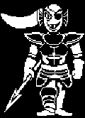

|  |
| Undyne |
|
角色介紹 |
| 中文翻譯 |
安黛因(魚姐) |
| 初見之地 |
瀑布 |
|
Alphys(戀愛關係) |
| 關係 |
Asgore(朋友/指導者/上屬) |
|
Papyrus(受訓者/朋友) |
|
Sans(下屬) |
Undyne身為皇家衛隊的領導,實力自然不可小覷，同時你也是少數第一次遇到玩家就不斷想著如何幹掉我們的角色，但在和平線時，經過無數次的磨合，最終Undyne還是能與我們成為朋友，至於普通線中我們可以用戰鬥或逃跑的方式來通過此Boss戰,屠殺線中Undyne會為了幫怪物小孩擋刀，而被玩家一刀秒。但是，他的決心不許他就此倒下。就此，屠殺線中的第二把交椅 Undyne the Undying(決心魚姐)強勢當場，此時她集結了所有地下怪物的靈魂，他們的心跳也都隨著同一個頻率跳動，唯一的目標就是殺掉玩家。只可惜最終依然敗給了主角，在被擊敗後Undyne會對自己還無法擊敗主角而對自己感到失望，但也對Alphys已經疏散所有人而感到放心。在她完全死去之前，她因為過多的決心而開始融化並死亡。至此屠殺線意義上也就剩下Sans一位敵人了